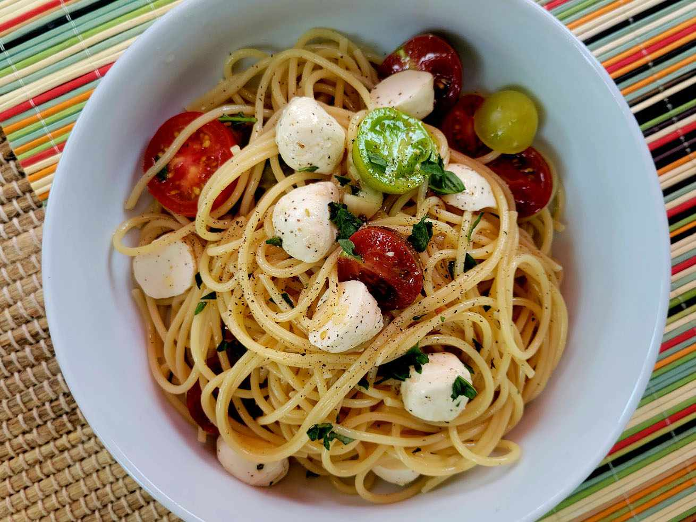

Caprese Pasta with Thai Basil

Description
This caprese pasta is the perfect cool and refreshing summer dish. The lemon-infused white balsamic vinegar adds a really nice twist to this classic dish.
Ingredients
- 1 pound spaghetti/li>
- 1 ½ cups cherry tomatoes, halved
- ½ cup olive oil
- 3 tablespoons lemon-infused white balsamic vinegar
- 2 cloves garlic, chopped
- ⅓ cup chopped Thai basil
- 1 (8 ounce) container small mozzarella balls in oil, halved
- salt and freshly ground black pepper to taste
Steps
- Bring a large pot of lightly salted water to a boil. Cook spaghetti in the boiling water, stirring occasionally, until tender yet firm to the bite, about 12 minutes.
- Combine cherry tomatoes, mozzarella balls, olive oil, balsamic vinegar, garlic, and Thai basil in a large mixing bowl; mix well. Season with salt and pepper to taste.
- Drain pasta and top with cherry tomato mixture.
Go back